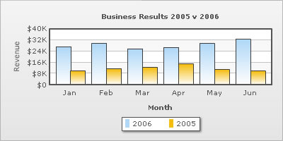
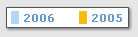

|
| In multi-series / combination charts, the series name of each data-set shows up in the legend of the chart. This helps you relate a data plot to its series name using its color. The legend does not appear for single-series charts because there is only one series in the chart. |
| |
|  |
| |
| Notice the legend below the chart which helps identify the series name. The XML going into the chart above is: |
| |
<chart caption='Business Results 2005 v 2006' xAxisName='Month' yAxisName='Revenue' showValues='0' numberPrefix='$'>
<categories>
<category label='Jan' />
<category label='Feb' />
<category label='Mar' />
<category label='Apr' />
<category label='May' />
<category label='Jun' />
</categories>
<dataset seriesName='2006'>
<set value='27400' />
<set value='29800' />
<set value='25800' />
<set value='26800' />
<set value='29600' />
<set value='32600' />
</dataset>
<dataset seriesName='2005'>
<set value='10000'/>
<set value='11500'/>
<set value='12500'/>
<set value='15000'/>
<set value='11000' />
<set value='9800' />
</dataset>
</chart> |
| |
| The order of items in legend can be reversed by setting: |
| <chart reverseLegend='1' ...> |
| |
| The legend can be placed in 2 positions: RIGHT and BOTTOM. It gets placed below the canvas by default. To place it to the right of the chart canvas, set legendPosition='RIGHT'. |
| |
| <chart legendPosition='RIGHT'...> |
| |
| The legend can be hidden as well using showLegend='0'. |
| |
| <chart showLegend='0'...> |
| |
| The looks of the legend can be customized using the following attributes: |
| legendBgColor |
Hex Code |
Background color for the legend. |
| legendBgAlpha |
0-100 |
Background alpha for the legend. |
| legendBorderColor |
Hex Code |
Border Color for the legend. |
| legendBorderThickness |
In Pixels |
Border thickness for the legend. |
| legendBorderAlpha |
0-100 |
Border alpha for the legend. |
| legendShadow |
0/1 |
Whether to show a shadow for legend. |
| legendScrollBgColor |
Hex Code |
If you've too many items on the legend, a scroll bar shows up on the same. This attribute lets you configure the background color of the scroll bar. |
| legendScrollBarColor |
Hex Code |
If you've too many items on the legend, a scroll bar shows up on the same. This attribute lets you configure the bar color of the scroll bar. |
| legendScrollBtnColor |
Hex Code |
If you've too many items on the legend, a scroll bar shows up on the same. This attribute lets you configure the color of buttons of the scroll bar. |
|
| |
| Using Styles, the font properties of the legend can be customized. |
<chart caption='Business Results 2005 v 2006' xAxisName='Month' yAxisName='Revenue' showValues='0' numberPrefix='$'>
<categories>
<category label='Jan' />
<category label='Feb' />
<category label='Mar' />
<category label='Apr' />
<category label='May' />
<category label='Jun' />
</categories>
<dataset seriesName='2006'>
<set value='27400' />
<set value='29800' />
<set value='25800' />
<set value='26800' />
<set value='29600' />
<set value='32600' />
</dataset>
<dataset seriesName='2005'>
<set value='10000'/>
<set value='11500'/>
<set value='12500'/>
<set value='15000'/>
<set value='11000' />
<set value='9800' />
</dataset>
<styles>
<definition>
<style name='myLegendFont' type='font' size='11' color='639ACE' bold='1' />
</definition>
<application>
<apply toObject='Legend' styles='myLegendFont' />
</application>
</styles>
</chart> |
| |
| The above XML would yield a legend which looks as under: |
|  |
| |
| To read more on Styles, please see "For Web Developers > FusionCharts and STYLES" section. |
| |
| The legend can be animated using Styles. Here, we will give a fade-in effect to the legend. |
| |
<chart ... >
.....
<styles>
<definition>
<style name='myAnim' type='animation' param='_alpha' start='0' duration='1'/>
</definition>
<application>
<apply toObject='Legend' styles='myAnim' />
</application>
</styles>
</chart> |